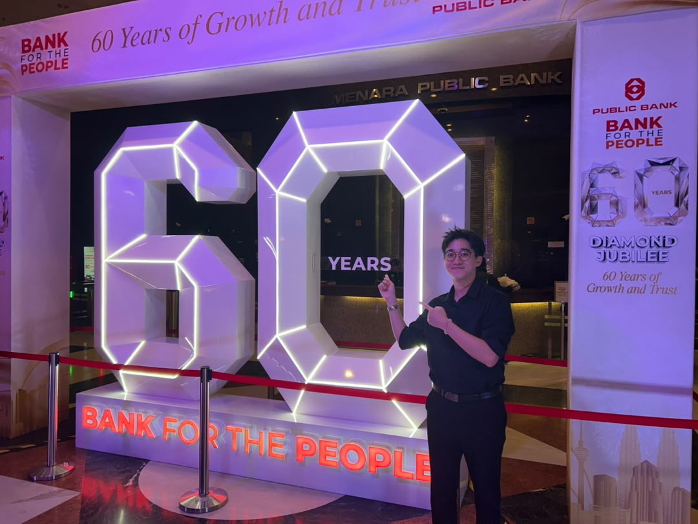

Public Bank Berhad • Apr 2026 - Sep 2026
Financial Services & Banking
Public Bank Berhad is one of the premier banking groups in Malaysia, renowned for its strong financial performance, prudent management, and exceptional banking services across retail, commercial, and corporate sectors.
Division: Hire Purchase Supervision Division (HPSD)
Unit: Reporting & AKPK and FIS & Administration (SSTF)
During my 6-month practicum, my primary objective was to handle data transformation, streamline massive daily reporting workflows, and eliminate manual calculation errors using advanced Excel functions, Power Query, and custom VBA macros.

Headquarters / Department Building
Started my journey by officially reporting to the Hire Purchase Supervision Division (HPSD), specifically under the Reporting & AKPK and FIS & Administration (SSTF) unit, right after signing all my documents with HR. I spent some time reading through the HR manual just to understand the core rules of surviving in the bank. Luckily, there was another intern named Howard in the same subunit who was in his final week. I basically stuck to him like glue—having lunch, working together, and trying to absorb all his knowledge to get a head start so I wouldn't have to bother the seniors too much once he left. We ended the week with a farewell gathering for him alongside seniors from the other subunits.
Reality hit as I started working on my first monthly report, the Loan in Arrears report. I had to work with a massive chunk of raw data that my senior extracted from SAS programming into Excel. From there, it was an endless cycle of data cleaning and preprocessing, dealing with a crazy amount of rounding and balancing between PBB and PIBB for Hire Purchase (HP) and Impaired Loan (IL) accounts. I did so many VLOOKUPs to pull the desired data into the final format. Finally, I had to hardcode all the formulas into static values, just because the report had to cross different departments and we had to bypass some system security access restraints.
Moved on to a new beast called the Daily Recovery report, which basically tracks how much of the HP loans the bank recovers every single day compared to the previous month's outstanding balance. It involved more data cleaning, heavy rounding, and another massive dose of VLOOKUPs to transfer everything into a ready format. Watching the recovery progress slowly accumulate day by day was oddly satisfying, though.
Decided to take things into my own hands and started exploring Excel VBA macros on my own just to see what kind of magic they could do. For my first ever macro project, I set out to automate the tedious data transfer process for the Daily Recovery report. I sketched out a rough idea of the logic, ran into a few annoying failures during testing, but eventually got the code to successfully transfer the cleaned data. Feeling confident, I enhanced the code to automate three other related files. I even added a prompt that automatically switched the live VLOOKUP formulas into static values, letting us send the report around without any restraints.
Successfully developed and deployed my first independent VBA macro, transitioning a highly manual daily reporting process into an automated workflow across four separate files.
Worked on the Make Model report, dealing with HP loan data based on vehicle categories. I organized the accounts by car models and vehicle conditions like new, reconditioned, and second-hand. I also performed an ageing analysis of overdue loans for each model to figure out the delinquency trends and repayment progress. Later, I went to the BNM website to download the newest monthly hire purchase statistics to update our Industry Ratio report. This let us compare the bank's HP and IL loan ratios against the official BNM figures.
Started my second macro project, this time aiming to automate the Make Model report. This one was tough because it involved a 3D balancing rounding process. The macro had to process two distinct data blocks and three balancing groups (new, recon, second-hand) across nine adjustable columns. The data was separated into Total, Conventional, and Islamic categories, with each containing the three vehicle sub-categories. The script ran horizontal and vertical loops one after another until the checking difference across all of them was exactly zero.
Engineered a complex VBA logic loop capable of achieving true zero-variance 3D balancing across multiple nested reporting categories.
Jumped into my third macro project for the Loan in Arrears report. The code helped separate different Credit Administration Centres (CAC) and branches into different rows automatically. The best part was writing the macro to do extensive rounding adjustments dynamically, so the final rounded figure matched the total figure exactly without manual tweaking.
Worked on my fourth macro project, which was basically a leveled-up extension of the previous week's tool. After the rounding was done, this macro would look up the filename by prefix and automatically VLOOKUP the desired data right into the reporting template. It then changed the live formulas into values format and accurately handled the transfer across two different sheets for PBB and PIBB.
Handled the Overall Delinquency report. I spent the week organizing and tabulating monthly overall delinquencies, specifically focusing on potential impaired loans and confirmed impaired loans. Compiling and structuring all this data made it much easier for the team to do trend analysis and monitor performance over time.
Built a pretty cool macro called the "Phone Number Formatter". IT had enhanced our data access, but sometimes when extracting from SAS, phone numbers starting with '0' would just get cut off. I scripted the macro to detect the length of the phone number and automatically add the '60' (Malaysia) or '65' (Singapore) prefix back in. My seniors then used this cleaned-up list to blast SMS reminders to hirers for late payments.
Developed a "Hirer/Guarantor Separator" macro to deal with a messy data situation. The bank uses three different systems to store customer info, and for new customers, they abandoned the old system entirely. Because of this, the customer list was scattered across the systems with duplicate data. My macro identified the duplicate hirers and guarantors, eliminated them, and stored just one clean copy of their info. This saved the bank a lot of money, since blasting the same SMS multiple times to duplicate numbers isn't cheap.
Directly impacted the department's bottom line by building a duplication-filtering tool that significantly reduced unnecessary SMS and email blasting costs.
More phone number drama, which led to my "SMS/Email Phone Formatter (Post-Separation)" macro. When IT extracted data to the database, they set a hard cut after 11 digits. Since numbers like 011- contain 12 digits, that extra 12th digit was spilling over into the email column, creating fake phone numbers and corrupted emails. My macro identified these 12-digit numbers and pulled the digit back from the email string, resulting in correct, efficient lists for email and SMS blasting.
Successfully diagnosed and built a programmatic patch for a systemic IT extraction bug that was corrupting multi-column customer contact databases.
Worked on a new weekly workflow macro called the "Multi-Category Master to Target Sorter". It processed five different categories (0-7, 8-30, 1mth, CA, IL) from a master file and separated them into their corresponding target files based on eight different CACs (CACKL, CACCCE, CACJB, CACPG, CACBTW, CACIPOH, CACKLG, and NONCAC). In the middle of all this, I bumped into a massive PBB fire drill. The alarm went off in the evening, and we had to follow procedure, slowly climbing down 22 flights of stairs to head to the open parking lot.
Took on the HP_1mil report, zooming in on accounts with outstanding balances above 1 million. We had to check their B-score (Behavioral) to see the possibility of them turning into Impaired Loans in the future. After cleaning and transforming the data, I compiled these big accounts into a watchlist. The list gets updated monthly, so any account whose balance dropped below 1 mil or whose B-score improved to higher than 'D' was removed.
Moved on to the big leagues with the HP/FSF_3mil report. This one deals with accounts over 3 million that we had to pinpoint and view as potential IL accounts. I organized and sorted them in descending order by balance, filtering out anything below 3 million. After getting the data into a clean format, we zoomed in to observe their 'mtharr' and 'dayarr' (months and days in arrears) to mark if they were at high risk, updating their B-scores from time to time.
Built the "Base Listing Multi-Category Sorter" macro. It was similar to my week 13 macro but done monthly, taking new elements like NEWCA and NEWIL accounts into consideration. I compiled and organized the overdue accounts into buckets (0-7, 8-30, 1MTH, CA, NEWCA, IL, NEWIL). We closely monitored how many new accounts transitioned into newly Close Attention (CA) or Impaired Loan (IL) status, which helped the managers and heads make recovery decisions.
Worked on the Restructure & Reschedule (R&R) report. This involved dealing with accounts where hirers lengthened their loan tenure to lower their monthly installments while keeping the main contract terms the same. I separated them out with different code numbers and recalculated the overall delinquency ratio since it changes when an account transitions into R&R. I also analyzed the frequency of R&R approvals, performed ageing analysis, and tracked the nursing period on these cases before reporting the monthly figures to the management.
Assisted with the data transformation for Expected Credit Loss (ECL) data. I analyzed accounts that either improved (moving from stage 3 to stage 2, then back to stage 1) or worsened. I transferred the cleaned data into the report template, submitted it to my senior for checking, and sent it to our external auditor EY for justification. The highlight of the week was joining the massive 60th anniversary Public Bank event at the HQ—enjoying the food, fireworks, and a drone show.
Helped my seniors compile the draft 2026 yearly report of Hire Purchase to send to BNM. I assisted in preparing and printing all the required documents following the strict list given by BNM. The report included stuff like the net presentation of HP receivables, Months-in-Arrears (MIA) schedules, and Three-Stage Impairment Migrations. I filed them all together and submitted the stack to the manager for checking.
Coded a new interactive project called "IL Ratio Sensitivity & Scenario Analysis". It was a tool to forecast the future IL ratio if the impaired loan accounts were to increase. I applied a Userform in Excel to create a simple, user-friendly interface where the team could punch in desired and expected values. The macro would then generate a list of possible IL ratios and tabulate them automatically into a new sheet. The finished report helped managers figure out alternative ways to reduce the IL ratio.
Successfully developed a dynamic UI forecasting tool that allowed management to model future economic scenarios and adjust Impaired Loan strategies proactively.
Handled the CA Breakdown report. I analyzed potential impaired loans by classifying them based on the hirers' contact status—like promised to pay, cannot be contacted, not responsive, or refused to pay. I helped profile their repayment behavior based on demographic and financial characteristics like age, income level, and credit score. I also worked on the CA Tracking report to analyze payment trends (habitual vs non-habitual vs IL accounts), compiling it all to compare against the previous month and evaluate the payment percentage.
Worked on the Margin Earnterm report, organizing and analyzing the margins and earning terms for total and impaired HP loans. I categorized the loans under margin ranges (from below 70% up to 85% and above) and compiled them by earning terms (from 3 years & below, up to 8 to 9 years). I also tackled the Luxury Car report, classifying high-end accounts by car model. We compared the IL and total HP loans of these models to see how the luxury segment was actually performing.
Brought out the advanced Excel functions to highly improve the efficiency of the HP/FSF_3mil report process. I used the "UNIQUE" function to instantly pull distinct lists and remove duplicates, and followed it up with the "LET" function to assign names to calculation results, making complex formulas way easier to read. I also applied Power Query to do data transformation, loading them into connections and appending tables with the same variables into one massive table. I copied the results into the complete report format and set up conditional formatting to automatically highlight specific outcomes.
Overhauled a major data pipeline by integrating Power Query and advanced dynamic arrays (`UNIQUE`, `LET`), dramatically increasing processing speed and report readability.
Went back into all the macro projects I had built over the internship to do some final housekeeping. I enhanced them so they would run smoothly and avoid crashing during runtime. I made slight amendments based on new updates requested by the manager and spent time showing my seniors how to run each macro in the correct order. I set them all up in a single folder with unique names so it would be super convenient for the team to use after I left. Ended the week having an early farewell dinner with the seniors from the other subunits.
The final stretch! We welcomed a new intern who was also joining for six months. I guided her through the tasks I had been working on, showed her around the department, and explained all the necessary Hire Purchase knowledge so she could understand how the whole team functions. I had a great farewell lunch with the team and received some awesome surprises, gifts, and cakes on my last day of work. After an amazing six months, I finally signed off as an intern.
Developed complex algorithms to automate strict financial rounding and variance correction across multi-segment reporting sheets.
Built extraction repair tools to fix critical IT bugs across legacy systems, standardizing contact data for 300,000+ rows and saving operational costs.
Replaced massive manual copy-paste workflows with multi-file sorting macros that detect, format, and route master data to specific target files.
Created an interactive forecasting tool to help management visualize Impaired Loan ratios against various economic conditions and portfolio growths.